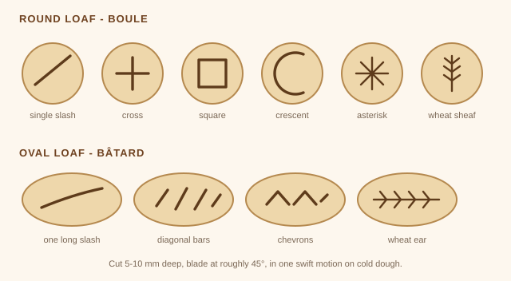

Basic sourdough loaf
One round loaf, baked in a covered pot. Starter fed the night before, dough mixed in the morning, shaped late afternoon, baked the next day. This is the recipe I was taught, and it is the one I still use.
Needs active starterTested
Before you start
Your starter must be properly established, doubling reliably within 4-8 hours of a feed. A newly revived starter on day five will not raise a loaf, and the result is a dense brick that makes you think you did something wrong. Give it a full week or two of good feeds first.
Ingredients
| Ingredient | Weight |
|---|---|
| Bread flour | 500 g |
| Water, filtered | 350 g |
| Active starter, at peak | 100 g |
| Fine sea salt | 11 g |
King Arthur bread flour is what Snow is used to. Any unbleached bread flour, or plain flour with at least 11.5 % protein, will work - but plain flour absorbs less, so drop the water to about 325 g.
Equipment
- A large mixing bowl and a digital scale
- A cast iron pot or any oven-safe pot with a lid, around 4-5 litres
- A banneton, or a bowl lined with a well-floured tea towel
- A bench scraper, if you have one
- A sharp knife, razor blade or lame for scoring
- Baking parchment and a wire rack
Each step below is explained properly on the method page, if you want to know why.
Method
Feed your starter so it is at its peak when you want to mix in the morning. A 1:5:5 feed - 20 g starter, 100 g water, 100 g flour - fed around 8 pm will usually be ready by breakfast.
If the starter has been in the fridge, get it out two days before and give it a couple of feeds first, so you know it is lively.
Whisk 100 g starter into 350 g water with a fork until the water turns milky. Add 500 g flour and 11 g salt, bring it together into a stiff dough, then finish by hand for 3 to 5 minutes until there are no dry bits left.
It will feel dense and shaggy and will stick to your fingers. Scrape off what you can, cover with a damp towel, and rest 30 minutes.
While it rests, feed the jar you just took the starter out of.
With slightly wet hands, grab the underside of the dough, stretch it up and fold it over the centre. Turn the bowl a quarter turn and repeat, four times round. That is one set.
Do 3 sets, 30 minutes apart. The dough goes from flat and dense to plump and smooth over the three. After the last one, gather it neatly with the sides tucked under.
Cover with a damp towel or a shower cap and leave at room temperature, ideally 24-26 °C. It is ready when it is puffy, smooth, domed at the edges and jiggles when you shake the bowl.
Judge the rise, not the clock. How much it should grow depends on how warm it is: about 40 % at 25 °C, but 75 % in a cool 21 °C kitchen and only 30 % at 27 °C. Warm dough keeps fermenting through shaping and for hours in the fridge, so you stop earlier to leave room. Full table here.
Tip the dough onto a very lightly floured counter and gather it into a round. Use a bench scraper to push the ball against the counter a few times so the surface tightens. Leave it uncovered for 30 minutes.
It will spread out and look sad. That is correct - the gluten is relaxing, and the final shape will prop it straight back up.
With floured hands, flip the dough over and shape it again, pulling it towards you in a circular motion until the surface feels taut. Dust the top with flour and place it seam side up in a floured banneton or towel-lined bowl. Rest 30 minutes.
Cover and put it in the fridge overnight. This tightens the shape, deepens the flavour, makes the loaf far easier to score, and improves the rise in the oven. It also means you bake whenever suits you the next day.
In a hurry? Instead of the fridge, proof at room temperature for 1 to 2 hours until a floured finger leaves a dent that fills back in slowly but not completely, then bake. Milder flavour, trickier scoring.
Put the pot with its lid on into the oven and heat to 260 °C / 500 °F for a full 45 to 60 minutes. The pot itself has to be properly hot, not just the oven air.
Take the dough straight from the fridge and tip it onto a square of baking parchment, leaving enough paper around it to lift by. Dust lightly with flour.
Make one confident cut, about 5-10 mm deep, held at roughly 45° to the surface. A big X works well too. One swift motion - hesitating gives ragged edges.

The single slash is the one to learn first - it gives the best rise and the classic raised ear. Everything else is decoration, and none of it changes how the bread tastes.
Lift the dough into the hot pot by the parchment and put the lid on. Drop the oven to 230 °C / 450 °F.
- 25 minutes with the lid on. The trapped steam is what gives you the rise and the crust. This is the whole reason for the pot.
- Lid off, then 20 to 30 minutes more, until deep golden brown.
Done is an internal temperature of 96-99 °C / 205-210 °F. If the bottom is catching, slide a baking tray onto the shelf below; if the ear browns too fast, lay foil over it.
Onto a wire rack for at least an hour, and genuinely better at two or more. The loaf is still cooking inside as it cools, and slicing it hot gives you a gummy crumb. This is the hardest step.
Rough timeline
| When | What |
|---|---|
| Two days before | Starter out of the fridge, feed it twice |
| Evening before, ~8 pm | Feed 1:5:5 so it peaks overnight |
| ~8 am | Mix, rest 30 min |
| 8.30 to 10 am | Three sets of stretch and folds |
| 10 am to 3 pm | Bulk ferment |
| ~3 pm | Pre-shape, rest, final shape, rest |
| ~4.30 pm | Into the fridge |
| Next morning | Heat the pot, score cold, bake, cool |
If the first one is bad
It very often is, and it is usually the starter rather than the baker. Dense and gummy means it needed more strength or more time. Feed for another week and try again. Nearly everyone's third loaf is dramatically better than their first.
Once this loaf works, the easiest way to make it interesting is adding things to it.
Baked repeatedly in my own kitchen. If it goes wrong for you, that is worth knowing - tell me.